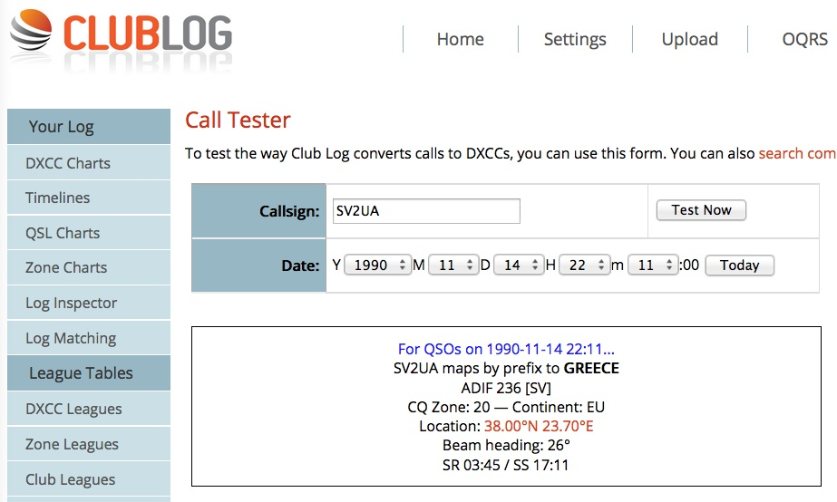
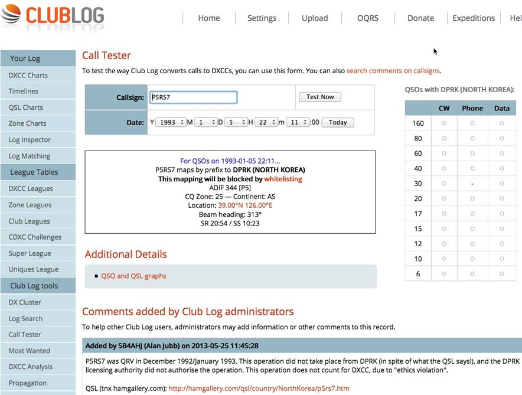

Thanks for the help. I thought that the SV2 card may be plain old Greece and I knew that the P5 card was bogus. I still remember all of the flaming emails about it. Nice card though. I’m still looking for three or more new ones for HR. Hopefully before I croak. Bill WB6JJJ (longest call on CW in Calif.) From: John Miller [mailto:webaron@gmail.com] Bill: According to ClubLog’s Call Tester, SV2UA maps to Greece on that date. And the 1993 P5RS7 operation did not take place in North Korea = does not count for DXCC. See attached snapshots. 73, John, K6MM   On Aug 20, 2016, at 11:20 PM, Bill Maurer via Chat <chat@ncdxc.org> wrote: I was going through a book of old QSL cards and found one from SV2UA, George. The card states Mount Athos DXpedition Sept 1987 on the top. My QSO was Nov. 14, 1990 on Ten Meters. I have a feeling that this is actually a contact with Greece and not Mt. Athos. True??? I also came across my P5RS7 card from Romeo (1993) that I am sure was his bogus operation actually from China. Too Bad… Bill WB6JJJ _______________________________________________ |